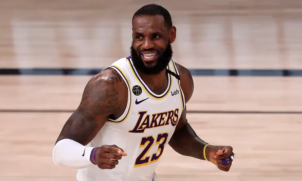
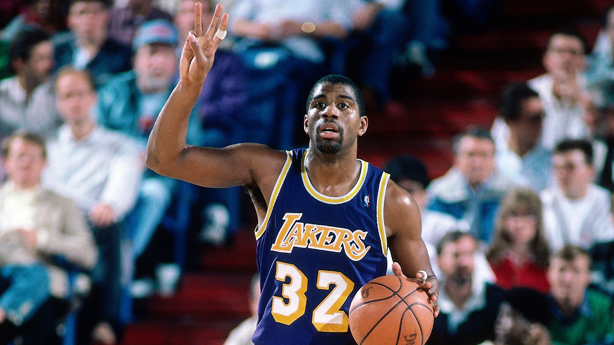

1. Michael Jordan
1. Michael Jordan
| Finishing: 10/10 | Shooting: 8/10 | Defense: 9/10 | Playmaking: 7/10 | Leadership: 10/10 | Total: 44/50 |
Michael Jeffrey Jordan, also known by his initials MJ, is who I consider to be the greatest basketball player of all time. Not only was I introduced to the game through him, but I think his win-at-all costs mentality and borderline psychopathic desire to be the best in all facets of the game are some traits you could never duplicate.
 2. LeBron James| Finishing: 10/10 | Shooting: 7/10 | Defense: 8/10 | Playmaking: 9/10 | Leadership: 9/10 | Total: 43/50 |
LeBron Raymone James Sr. is my pick for the second best player of all time. Some people think that this is an insult of some sort, but rather I give that title out with a badage of honor. I think LeBron is a freak of nature; his wingspan, build, and near photographic knowledge of the game are all facets of one of the most complete players in NBA history. I. personally, just don't think his overall approach to the game speaks to me like MJ's.
 3. Kobe Bryant
3. Kobe Bryant
| Finishing: 10/10 | Shooting: 9/10 | Defense: 7/10 | Playmaking: 7/10 | Leadership: 8/10 | Total: 41/50 |
The late, the great, Kobe "Bean" Bryant! A lot of people don't even have Kobe in their top 5s anymore, but to me, the real GOAT debate belongs between these three, and these three only. While not as efficient as LeBron or as instantly great as MJ, Kobe represented a middle ground between the two; for all of MJ's pros, he could never shoot the ball as well as Kobe. And, for all of LeBron's greatness, he didn't have the killer instinct, the sheer drive that Kobe did. May he rest in peace.
 HM: Magic Johnson| Finishing: 8/10 | Shooting: 6/10 | Defense: 8/10 | Playmaking: 10/10 | Leadership: 8/10 | Total: 40/50 |
Magic Johnson was someone I wanted to make sure was on the list, even as an honorable mention, simply due to the fact that I personally think his game was super ahead of his time. His passing, defense- even the swagger and speed he played with was ahead of his time for someone of his era. I would've loved to see him in today's NBA, as he paved the way for future oversized guards and point forwards as a whole.